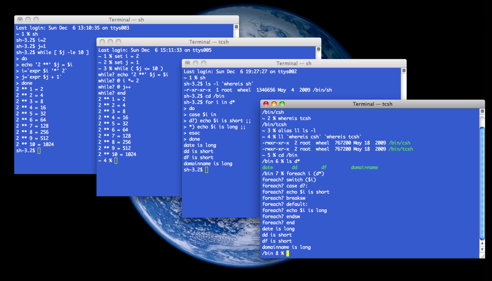

Simple C Shell
A basic shell implementation in C capable of changing directories and executing system programs, utilizing key system calls and environment variables.

Tools and Technologies Used:
- Programming Language: C
- Development Environment: Console-based (vim)
- System Calls: fork, exec, wait
- Standard Library Functions: getenv
- Build System: Makefile
Key Features:
- Command Execution: Ability to execute system programs like pwd and ls
- Directory Navigation: Implementation of the cd command for changing directories
- Environment Variable Handling: Utilization of the PATH environment variable for locating executable files
- Process Management: Use of fork, exec, and wait system calls for process creation and control
- Command Parsing: Parsing user input to separate commands and arguments
- Memory Management: Dynamic allocation and deallocation of memory for command structures
Technical Highlights:
- Custom Command Structure: Implementation of a command_t struct to store parsed command information
- Path Resolution: Development of a find_fullpath function to locate executable files in PATH directories
- Built-in Command Handling: Special handling for built-in commands like cd and exit
- Error Handling: Proper error messages for command not found scenarios
- Code Modularity: Separation of functionalities into distinct functions (parse, execute, etc.)
Achievements:
- Functional Shell Implementation: Successfully created a basic working shell capable of executing commands and navigating directories
- System Call Mastery: Demonstrated proficiency in using low-level system calls for process management
- Environment Variable Integration: Effectively utilized environment variables to enhance shell functionality
- Memory Safety: Implemented proper memory allocation and deallocation to prevent leaks
Lessons Learned:
- Low-Level Programming: Gained deeper understanding of operating system interactions through C programming
- Process Control: Enhanced knowledge of how processes are created, executed, and managed in Unix-like systems
- Command Line Interface Design: Learned about the structure and functionality of command-line shells
- Environment Variable Usage: Understood the role and application of environment variables in system programming
- Code Organization: Improved skills in structuring a complex program with multiple interrelated functions